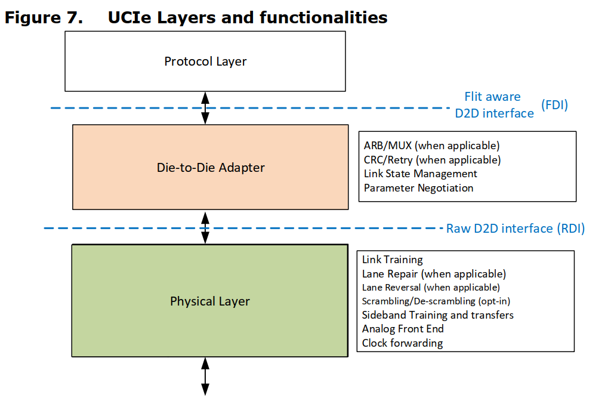
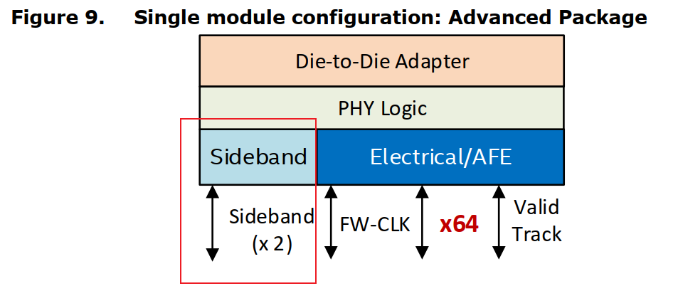
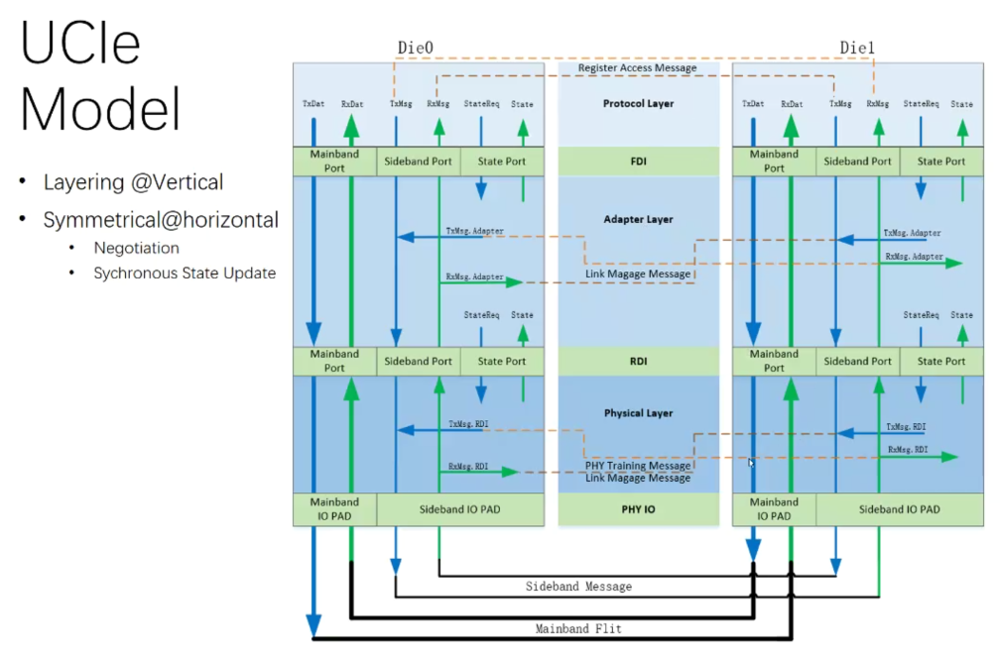

UCIe
[toc]
Universal Chiplet Interconnect Express，是Intel、AMD、ARM、高通、三星、台积电、日月光、Google Cloud、Meta和微软等公司联合推出的Die-to-Die互连标准，其主要目的是统一Chiplet（芯粒）之间的互连接口标准，打造一个开放性的Chiplet生态系统。UCIe在解决Chiplet标准化方面具有划时代意义。

UCIe大体上来说就是PCIe/CXL换了个低功耗的用于D2D互连的PHY，从而实现低功耗的需求。
所以UCIe兼容多个协议，包括PCIe, CXL 和Raw Mode。 Raw Mode可以支持任意协议，只需要两侧匹配即可（例如以太网）。使用Flit 格式，上述协议共享物理层和Link 层。
协议层
UCIe支持PCIe 6.0 Standard 256B Flit Mode、CXL 2.0 "CXL 68B-Enhanced Flit Mode"和CXL3.0 "CXL 256B Flit Mode” ，其子协议CXL.io, CXL.cache, CXL.mem是单独协商的，不支持CXL 1.1。在这些模式下，Retry机制在适配层实现。
PCIe6.0、CXL2.0和CXL3.0都支持一种模式叫RAW Mode，用户自定义的Streaming协议只支持RAW Mode，在这种模式下，所有64B或者256B数据都由协议层填充，适配层做透明传输，CRC、FEC和Retry都由协议层处理。
协议层支持的协议模式和Flit格式在SOC集成时或者Die bring up时确定。在协商过程中适配层通过FDI接口把这些信息作为Link Training的一部分传给协议层。
另外一个有趣的是UCIe支持UCIe Retimer，这样UCIe就把互连的拓扑伸到了封装外。UCIe Retimer一端采用UCIe协议，另外一端采用CXL协议，实现封装内互连到封装外互连的巧妙转换。这也是UCIe兼容PCIe/CXL带来的一个好处。
UCIe的两个Die之间的物理连接特别说明了包含2部分Sideband， 用于参数交换，寄存器访问等等，这个在回片调试上会非常有用。每个方向包含一个Forward clock pin，一个Data Pin，时钟固定800MHz。对于高级封装（2.5D），每个方向提供一个多余的Clock和Data用于RepairMain-band，主要的数据通路，包含1 Forwarded Clock，1 Data Valid Pin和N Lanes。UCIe定义了Module的概念，分为2D和2.5D封装两种，唯一的区别就是2.5D封装由于Bump Pitch优势可以支持x64（即64Lane）而2D封装的一个Module只支持下6 （即16Lane）。对于2.5D封装，N=64，提供多余4个Pins用于Repair；对于2D封装，N=16，没有多余Pins


参考：
https://developer.aliyun.com/article/1073675